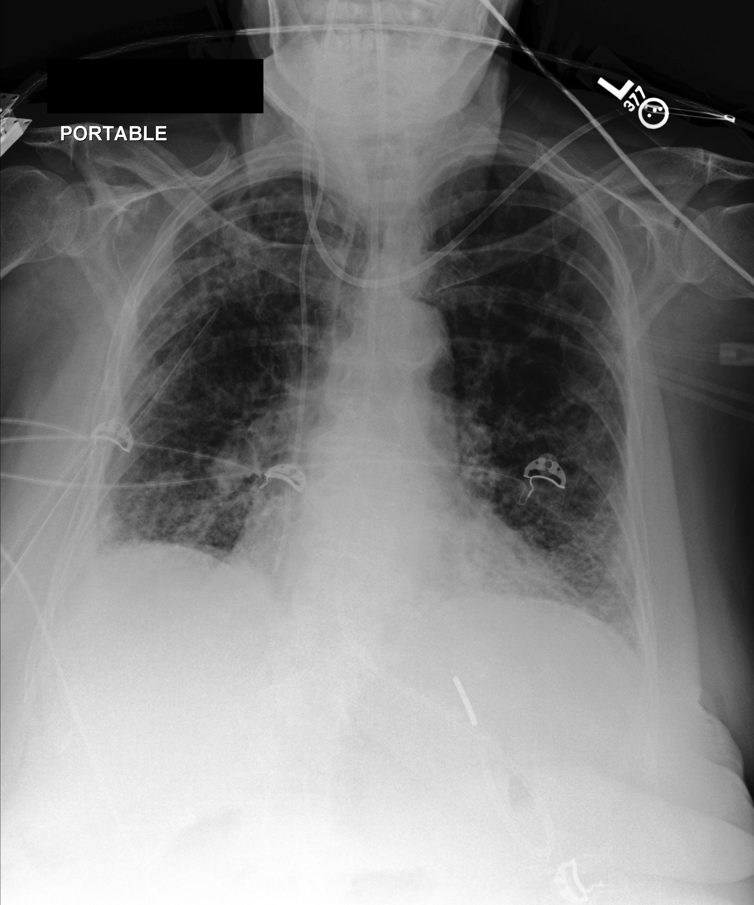
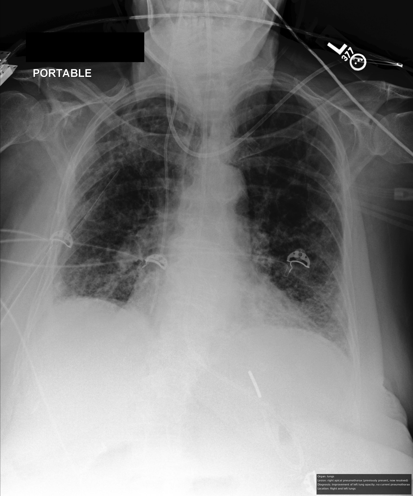
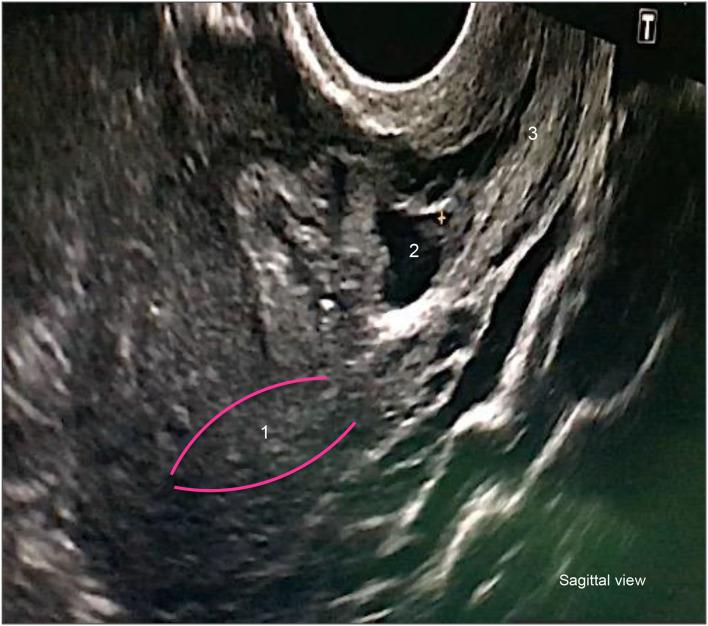
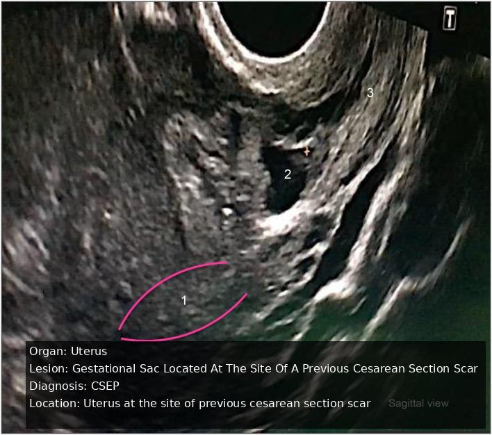
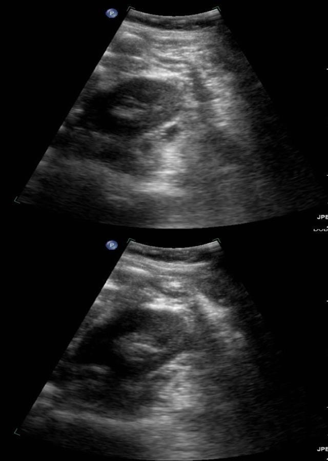
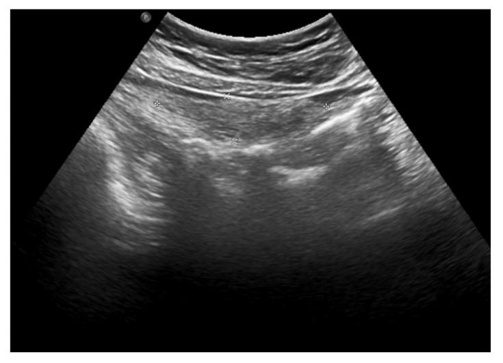
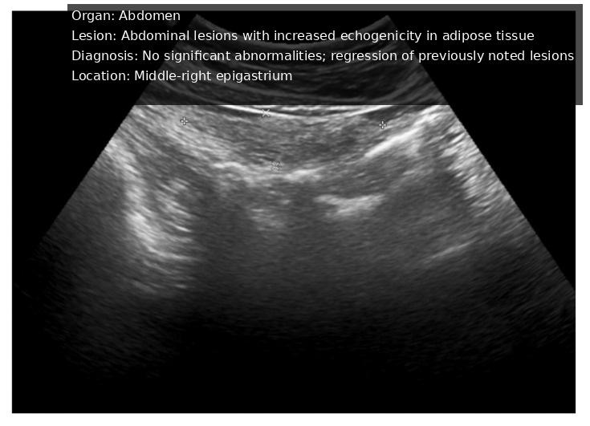
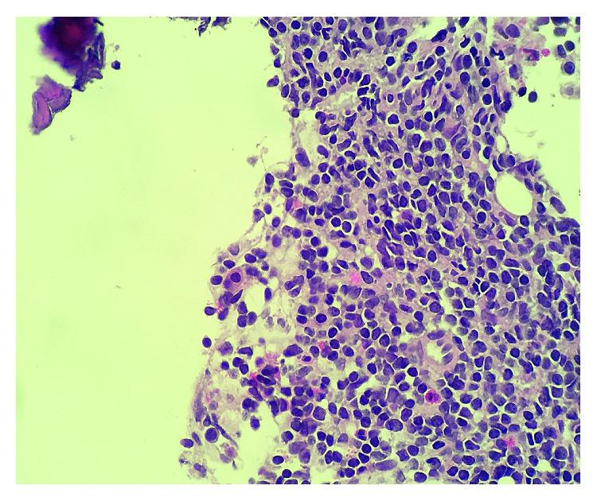
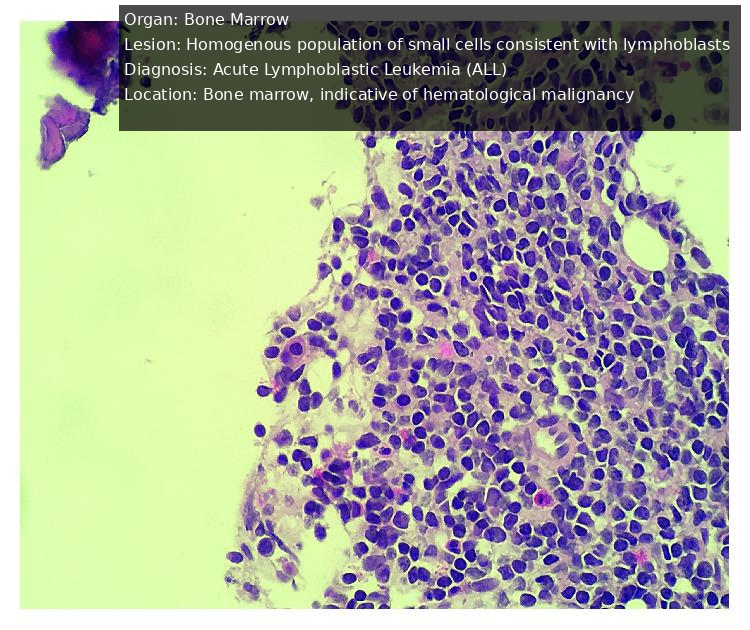

MedGEN-Bench: A Contextually Entangled Benchmark for Open-Ended Multimodal Medical Generation
Overview


Abstract
Medical vision-language models (VLMs) are increasingly expected to support clinical workflows through the generation of diagnostic text and relevant medical images. However, existing medical visual benchmarks exhibit three recurring limitations: query–image misalignment arising from queries that are weakly grounded in specific image instances, closed-ended formats that narrow the answer space and encourage shortcut-based prediction, and text-centric output paradigms that limit the evaluation of image-generation and image-editing capabilities. To address these limitations, we introduce MEDGEN-BENCH, a benchmark for open-ended multimodal medical generation. The evaluation snapshot reported in this manuscript comprises 6,422 expert-reviewed image–text pairs spanning 6 canonical imaging modalities, 15 clinical tasks, and 26 named subtasks. It includes 1,100 Visual Question Answering (VQA) pairs, 3,872 Image Editing pairs, and 1,450 Contextual Multimodal Generation pairs. MEDGEN-BENCH centers on contextual entanglement, defined as the dependence of an instruction’s intended output on the particular image instance rather than on task wording alone. The benchmark operationalizes this concept through image-grounded instructions and extends evaluation to open-ended multimodal outputs. Its tiered evaluation protocol combines reproducible, reference-based fidelity and similarity measures with a structured, checklist-guided assessment by a medical VLM judge. Neither global similarity scores nor VLM-based judgments are treated as evidence of clinical correctness. We evaluate 10 compositional frameworks, 2 dedicated image-editing models, 3 unified models, and 5 VLMs. The results show that image-output tasks remain unsaturated, with contextual multimodal generation appearing more challenging than image editing under the reported metrics. Contextual augmentation increases the mean image–instruction similarity from 0.273 to 0.372, while a 1,000-case medical-expert audit shows moderate agreement between the judge scores and clinician ratings. The source code and manifest for the reported evaluation snapshot will be made publicly available on GitHub.
Representative Examples
MedGEN-Bench evaluates open-ended multimodal medical generation through image-grounded, contextually entangled instructions: the intended answer or transformation depends on the particular input image rather than task wording alone. Its 6,422 expert-reviewed pairs reference 10,703 unique images across six canonical modalities, 15 clinical tasks, and 26 named subtasks, unifying visual question answering, instruction-guided image editing, and contextual multimodal generation.
The three-page gallery rotates automatically and shows three examples per page. Use the previous and next buttons, page selectors, or left and right arrow keys to browse.
















Evaluation Protocol and Main Findings
Reference-based fidelity and similarity measures are reported alongside structured holistic assessment.
| Task | System | Holistic (1–5) | Image | Text | ||||||
|---|---|---|---|---|---|---|---|---|---|---|
| w. GT ↑ | w.o. GT ↑ | SSIM ↑ | PSNR ↑ | LPIPS ↓ | MII ↑ | BLEU ↑ | PBScore ↑ | EM ↑ | ||
| Gen. | Gemini-2.5-flash-image [46] | 2.90 | 3.48 | 37.61 | 11.85 | 46.15 | 65.36 | 0.61 | 88.95 | — |
| Show-o [47] | 1.04 | 1.04 | 26.94 | 9.72 | 69.99 | 33.92 | 0.53 | 86.07 | — | |
| Ming-UniVision [48] | 2.02 | 2.52 | 33.82 | 8.93 | 59.70 | 54.64 | 0.57 | 87.54 | — | |
| Qwen3-VL & Seedream-4.0 [43, 49] | 2.18 | 2.23 | 17.61 | 8.83 | 64.28 | 47.47 | 0.58 | 88.11 | — | |
| Qwen3-VL & DALL-E 3 [43, 50] | 1.59 | 1.63 | 13.34 | 9.20 | 66.12 | 44.45 | 0.59 | 88.12 | — | |
| Qwen3-VL & Imagen-4.0 [43, 51] | 2.09 | 2.24 | 22.12 | 9.56 | 62.84 | 46.94 | 0.59 | 88.08 | — | |
| GPT-4o & Seedream-4.0 [22, 49] | 1.87 | 1.86 | 16.67 | 9.01 | 64.80 | 46.62 | 0.64 | 87.80 | — | |
| Gemini-2.5-pro & Seedream-4.0 [46, 49] | 2.07 | 2.21 | 17.10 | 8.64 | 64.68 | 47.64 | 0.61 | 88.23 | — | |
| Edit. | Gemini-2.5-pro [46] | 3.85 | 4.19 | 47.24 | 15.74 | 26.67 | 82.55 | — | — | — |
| Show-o [47] | 1.07 | 1.08 | 26.33 | 9.65 | 70.15 | 33.71 | — | — | — | |
| Ming-UniVision [48] | 3.08 | 3.36 | 46.06 | 14.97 | 34.71 | 77.03 | — | — | — | |
| Seedream-4.0 [49] | 1.62 | 1.50 | 18.16 | 7.98 | 64.29 | 46.37 | — | — | — | |
| Qwen-image-edit [52] | 3.77 | 4.11 | 53.10 | 16.46 | 24.57 | 83.88 | — | — | — | |
| Qwen3-VL & GPT-image-1 [43, 53] | 4.02 | 4.37 | 35.20 | 12.06 | 47.29 | 72.54 | — | — | — | |
| Qwen3-VL & DALL-E 3 [43, 50] | 1.59 | 1.50 | 15.17 | 8.32 | 64.39 | 51.73 | — | — | — | |
| Qwen3-VL & Imagen-4.0 [43, 51] | 2.87 | 2.94 | 24.78 | 8.98 | 58.06 | 59.51 | — | — | — | |
| GPT-4o & Imagen-4.0 [22, 51] | 2.60 | 2.64 | 24.14 | 8.82 | 59.31 | 56.88 | — | — | — | |
| Gemini-2.5-pro & Imagen-4.0 [46, 51] | 2.65 | 2.80 | 24.86 | 8.84 | 58.64 | 58.78 | — | — | — | |
| VQA | Qwen3-VL [43] | 4.04 | 4.55 | — | — | — | — | 2.21 | 87.67 | 43.28 |
| Gemini-2.5-pro [46] | 4.00 | 4.50 | — | — | — | — | 2.22 | 87.77 | 18.10 | |
| GPT-4o [22] | 3.70 | 4.14 | — | — | — | — | 2.25 | 87.36 | 24.67 | |
| HuaTuoGPT-Vision [54] | 3.61 | 4.03 | — | — | — | — | 3.79 | 87.86 | 28.37 | |
| RadFM [55] | 1.89 | 1.95 | — | — | — | — | 1.13 | 86.12 | 13.33 | |
| Show-o [47] | 1.59 | 1.64 | — | — | — | — | 0.05 | 74.91 | 3.01 | |
| Ming-UniVision [48] | 2.82 | 3.17 | — | — | — | — | 1.62 | 87.08 | 25.68 | |
Table 3. Main results at MedGEN-Bench. To compare systems across complementary evidence views, we report reference-based fidelity and similarity measures together with structured holistic assessment. Gen., Edit., and VQA denote multimodal generation, image editing, and visual question answering. Holistic scores (1–5) are from the checklist-guided Qwen3-VL-8B-Instruct judge, while w. GT and w.o. GT denote reference-aware and reference-free views. MII, PBScore, and EM denote MedImageInsight similarity, PubMedBERTScore, and Exact Match, respectively. Metrics in [0,1] are reported as percentages, and lower LPIPS is better. EM applies only to VQA. Bold and underline mark the best and second-best results.
| Control | Cross-modal | Anat. | Findings | Compliance | Halluc. / omission |
pHolm | |
|---|---|---|---|---|---|---|---|
| Δ | 95% CI | ||||||
| Blank image | 2.16 | 1.88–2.44 | 1.34 | 2.10 | 2.10 | 2.14 | 2.23 × 10−24 |
| Unrelated image | 1.07 | 0.81–1.33 | 0.32 | 0.78 | 0.43 | 0.39 | 1.43 × 10−11 |
| Same-modality image | 0.57 | 0.37–0.80 | 0.16 | 0.42 | 0.20 | 0.16 | 1.49 × 10−6 |
| Image shuffle | 0.64 | 0.43–0.86 | 0.28 | 0.65 | 0.28 | 0.30 | 4.60 × 10−7 |
| Instruction shuffle | 0.52 | 0.31–0.72 | 0.12 | 0.49 | 0.25 | 0.23 | 3.44 × 10−6 |
Table 4. Behavioral pairing sensitivity on a random 1,000-case sample spanning all benchmark tasks and canonical modalities. The table reports reference-free decreases, Δ = Scorrect − Scontrol, on five dimensions scored by LingShu-32B [57]. Larger values indicate stronger pairing dependence. The primary cross-modal-consistency endpoint includes a bootstrap 95% confidence interval and Holm-adjusted paired Wilcoxon p. Note: Scores use the 1–5 rubric. pHolm refers to the cross-modal-consistency endpoint, and incomplete judge scores are excluded pairwise. The instruction-shuffle row is bolded for readability, while its non-cross-modal values are auxiliary exploratory diagnostics.

Main observations
- Image-output tasks remain far from saturated. Gemini-2.5-flash-image gives the strongest reference-based generation results (37.61% SSIM, 11.85 dB PSNR, 46.15% LPIPS, and 65.36% MII), while Qwen-image-edit reaches 53.10% SSIM, 16.46 dB PSNR, 24.57% LPIPS, and 83.88% MII for editing.
- Image-backend selection has the larger observed effect. With Seedream-4.0 fixed, SSIM varies from 16.67% to 17.61% and MII from 46.62% to 47.64%; with Qwen3-VL fixed, the corresponding ranges widen to 15.17%–35.20% and 51.73%–72.54%.
- Pairing sensitivity is statistically significant. Under instruction shuffle, the reference-free cross-modal-consistency decrease is 0.52 (95% CI, 0.31–0.72; Holm-adjusted paired Wilcoxon p = 3.44 × 10−6).
- Contextual augmentation improves semantic alignment. Mean image–instruction similarity increases from 0.273 to 0.372, and pass rates across the six benchmark comparisons range from 70.86% to 96.45%.
Together, the semantic-alignment gains and pairing-sensitivity results support image-specific task grounding without implying unrestricted clinical reasoning or clinical correctness.
BibTeX
@article{yang2025medgenbench,
title = {MedGEN-Bench: Contextually entangled benchmark for open-ended multimodal medical generation},
author = {Yang, Junjie and Yan, Yuhao and Wu, Gang and Wang, Yuxuan and Liang, Ruoyu and Jiang, Xinjie and Wan, Xiang and Fan, Fenglei and Zhang, Yongquan and Qin, Feiwei and Wang, Changmiao},
journal = {arXiv preprint arXiv:2511.13135},
eprint = {2511.13135},
archivePrefix = {arXiv},
primaryClass = {cs.CV},
year = {2025}
}